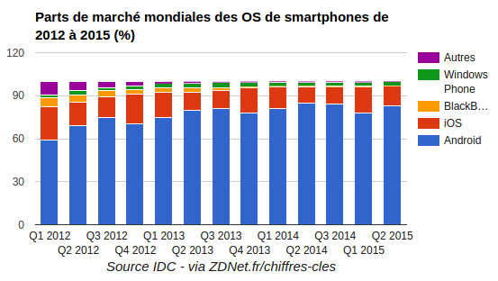
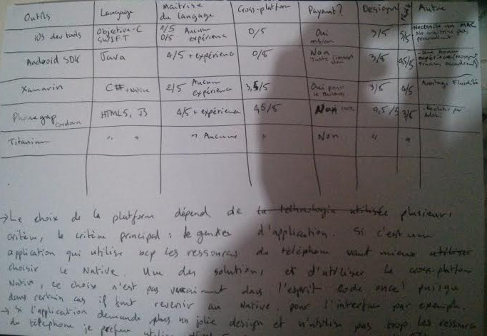

Développement Android depuis 2010
Cours Développement Mobile L3

iOS, Android, Windows Phone, BlackBerry, Tizen
Mais aussi: Ubuntu, Firefox…
Android SDK
Avantages
Inconvénients
Xamarin, Phonegap/Cordova, Titanium, Sencha, Ionic…
Avantages
Inconvénients
